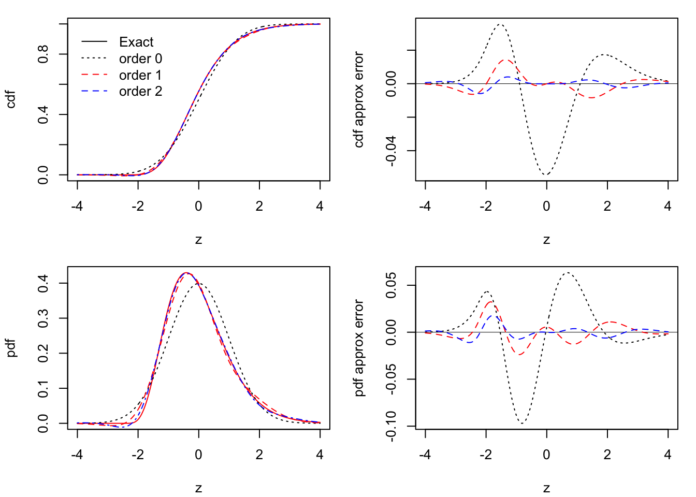

Code
# define needed Hermitepolynomials
H2 <- function(z){z^2 - 1}
H3 <- function(z){z^3 - 3*z}
H4 <- function(z){z^4 - 6*z^2 + 3}
H5 <- function(z){z^5 - 10*z^3 + 15*z}
H6 <- function(z){z^6 - 15*z^4 + 45*z^2 - 15}
# input values of gamma and tau
gam <- 2
tau <- 9
# choose a sample size
n <- 6
# get exact pdf and cdf
z <- seq(-4, 4, length = 500)
fz <- dgamma(z + sqrt(n),shape = n, scale = 1/sqrt(n))
Fz <- pgamma(z + sqrt(n),shape = n, scale = 1/sqrt(n))
# get Edgeworth expansions
F0z <- pnorm(z)
f0z <- dnorm(z)
F1z <- pnorm(z) - dnorm(z)*gam/6*H2(z)/sqrt(n)
f1z <- dnorm(z) + dnorm(z)*gam/6*H3(z)/sqrt(n)
F2z <- F1z - dnorm(z)*((tau - 3)/24*H3(z) + gam^2/72*H5(z)) / n
f2z <- f1z + dnorm(z)*((tau - 3)/24*H4(z) + gam^2/72*H6(z)) / n
# make plots
par(mfrow = c(2,2), mar = c(4.1,4.1,1.1,1.1))
# cdf approximation
plot(Fz ~ z,
type = "l",
ylab = "cdf")
lines(F0z ~ z, lty = 3)
lines(F1z ~ z, lty = 2, col = "red")
lines(F2z ~ z, lty = 4, col = "blue")
xpos <- grconvertX(x = .2,from="nfc", to ="user")
ypos <- grconvertY(y = .9,from="nfc", to ="user")
legend(x = xpos,
y = ypos,
legend = c("Exact","order 0","order 1","order 2"),
lty = c(1,3,2,2),
col = c("black","black","red","blue"),
bty= "n")
# cdf approximation error
plot(F0z - Fz ~ z,
type = "l",
lty = 3,
ylab = "cdf approx error")
abline(h = 0,lwd= .5)
lines(F1z - Fz ~ z, lty = 2, col = "red")
lines(F2z - Fz ~ z, lty = 2, col = "blue")
# pdf approximation
plot(fz ~ z,
type = "l",
ylab = "pdf")
lines(f0z ~ z, lty = 3)
lines(f1z ~ z, lty = 2, col = "red")
lines(f2z ~ z, lty = 4, col = "blue")
# pdf approximation error
plot(f0z - fz ~ z,
type = "l",
lty = 3,
ylab = "pdf approx error")
abline(h = 0,lwd= .5)
lines(f1z - fz ~ z, lty = 2, col = "red")
lines(f2z - fz ~ z, lty = 2, col = "blue")